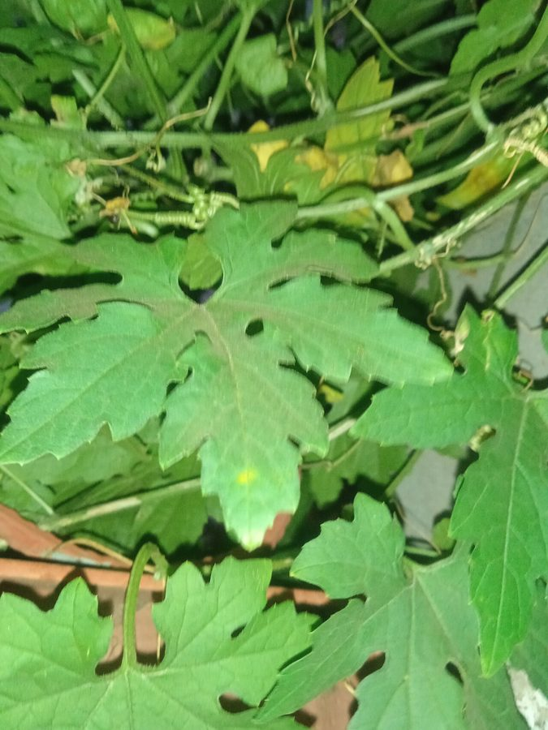

करेलाBitter Gourd
Momordica charantia · Cucurbitaceae · FLR-0097

- Scientific name
- Momordica charantia L.
- Family
- Cucurbitaceae
- Hindi
- करेला
- Status here
- cultivated
- IUCN
- not evaluated
When to look कब देखें
Expected mainly in June, July, August, September, October, November.
करेला / Bitter Gourd
Momordica charantia L. — Cucurbitaceae
करेला (तित करेला / बिटर गूर्ड / बिटर मेलन) — पूर्वी उत्तर प्रदेश के खेतों और घरेलू बगीचों में उगाई जाने वाली एक बहुत लोकप्रिय, पतली और तेजी से चढ़ने वाली वार्षिक शाकीय बेल (climbing annual vine) है। इसकी उत्पत्ति उष्णकटिबंधीय एशिया (probable origin) में हुई थी। इसकी सबसे बड़ी पहचान इसके गहरे कटे हुए पंजे जैसे पत्तीदार पत्ते, छोटे पीले रंग के फूल (yellow flowers), और पानीदार, कटी-फटी सतह वाले हल्के हरे रंग के कांटेदार फल हैं। करेले की तीखी कड़वाहट इसमें पाए जाने वाले 'मोमोर्डिसिन' (momordicin) और 'चेरेंटिन' (charantin) नामक रासायनिक यौगिकों के कारण होती है। पकने पर इसका फल चमकीला पीला-नारंगी हो जाता है और इसके सिरे फट जाते हैं, जिससे इसके अनोखे नक्काशीदार बीज बाहर आ जाते हैं जो चमकीले खून जैसे लाल रंग के आवरण (bright red arils) में लिपटे होते हैं। आयुर्वेद में करेले का उपयोग मधुमेह (blood sugar/diabetes) के इलाज में रक्त शर्करा को नियंत्रित करने के लिए एक प्रमुख घरेलू औषधि के रूप में किया जाता है। लाल कद्दू बीटल (Red Pumpkin Beetle, INS-0029) इसका भी एक आम कीट है।
Quick Identification त्वरित पहचान
| Feature | Description |
|---|---|
| Plant habit | Slender, highly branched, climbing annual herbaceous vine up to 2–5 meters, using simple uncoiled tendrils |
| Leaves | Alternately arranged, deeply 5–9 lobed (5–12 cm wide), round in outline, with smooth margins and a strong smell when crushed |
| Flowers | Small (2.0–3.0 cm), pale yellow, solitary, with female flowers bearing a tiny, warty, elongated green ovary at their base |
| Fruit | Elongated berry (8–20 cm) with a rough, warty skin covered in pointed bumps, turning from green to orange-yellow |
| Seeds | Flat, sculptured, brown-white (8–12 mm long), enclosed in a fleshy, gelatinous, bright crimson-red aril when fully ripe |
Field tip: Inspect backyard fences during August. Search for thin green vines climbing using fine spring-like tendrils. Look for small yellow flowers. The bumpy, green, spindle-shaped bitter gourds hang from the branches. Look for ripe orange ones split open at the bottom to show blood-red seeds.
Morphology आकारिकी
Biometrics (typical measurements of mature plants in the northern Indian plains):
| Measurement | Range |
|---|---|
| Vine length | 2.0–5.0 m |
| Leaf width | 5.0–12.0 cm |
| Flower diameter | 2.0–3.0 cm |
| Fruit length | 8.0–20.0 cm |
| Fruit weight | 50–150 g |
| Seed length | 8–12 mm |
Stem and Tendrils: Stems are thin, angular, grooved, slightly hairy. Tendrils are simple, unbranched, situated opposite the leaves.
Foliage: Simple, alternate leaves, divided nearly to the base into pointed lobes.
Flowers: Unisexual, male and female flowers are borne separately on the same vine.
Fruit and Seeds: The fruit splits open (dehiscence) into three valves when fully ripe, revealing the photogenic red-coated seeds.
Cultivation Calendar कृषि कैलेंडर
- Monsoon crop (Kharif): Sown in June–July. Vines are trained on fences or bamboo grids to prevent soil contact. Harvesting occurs from August to November.
- Summer crop: Sown in January–February, often grown as a ground crop in dry sandy fields. Harvesting occurs from April to June.
- Harvest Stage: Fruits are harvested when firm and green; if they start turning yellow, they become too soft and lose their commercial value.
Associated Species / Interactions संबंधित प्रजातियाँ
- Pest Association: The Red Pumpkin Beetle (Aulacophora foveicollis) actively feeds on the young leaves and shoots, stunting early vine growth.
- Pollinators: Small sweat bees, hoverflies, and honeybees visit the yellow flowers in the morning.
Pests and Diseases कीट और रोग
- Red Pumpkin Beetle: Aulacophora foveicollis (Red Pumpkin Beetle, INS-0029) damages foliage.
- Melon Fruit Fly: Bactrocera cucurbitae lays eggs under the fruit skin, causing the gourd to turn yellow, rot, and fall early.
- Downy Mildew: Fungal disease causing yellow patches on the upper leaf surface and grey mold underneath during wet monsoon weeks.
Traditional and Ethnobotanical Use पारंपरिक और नृवंशवनस्पति उपयोग
- Diabetes Management Juice: Fresh green bitter gourds are crushed, and 10–20 mL of the bitter juice (karela juice) is drunk daily in the morning on an empty stomach to regulate blood sugar levels.
- Karela Bharwan (Stuffed Bitter Gourd): The fruit is slit, bitter seeds are scraped out, stuffed with a mixture of dry mango powder (amchur), mustard, fennel, onions, and fried in mustard oil to reduce bitterness.
- Blood Purifier: Traditional practitioners prescribe boiled bitter gourd decoction to treat skin conditions like acne and scabies, believing it purifies the blood.
- Digestive Stimulant: The cooked vegetable is consumed to stimulate liver bile flow and relieve chronic constipation.
Expected Locally स्थानीय रूप से अपेक्षित
Not a field record. Written from published accounts for eastern Uttar Pradesh. No confirmed local sighting yet — if you have seen it, that is what the atlas needs.
अभी तक स्थानीय पुष्टि नहीं। यह विवरण प्रकाशित स्रोतों से है, किसी अवलोकन से नहीं।
A highly valued vegetable grown by farmers and home gardeners in the Basti district, regularly observed in the Harraiya, Vikramjot, and Basti blocks. Local traditional doctors (Vaidyas) state that the smaller, wilder varieties (kareli) are more bitter and possess stronger medicinal values for managing diabetes than the larger cultivated hybrid varieties.
Distribution वितरण
Global range: Native to tropical Asia (probably India or China); introduced and cultivated widely across all tropical regions of Africa, South America, and the Caribbean.
In India: Cultivated universally in all states.
In Uttar Pradesh: Abundant state-wide as a primary summer and monsoon vegetable.
In Basti district / eastern UP: Widespread across all agricultural blocks.
Research Questions शोध प्रश्न
Anyone can investigate these | कोई भी इन प्रश्नों की जाँच कर सकता है
- How does the sweetness (Brix value) or bitterness of Bitter Gourd change as the fruit turns from dark green to bright orange-yellow? — Taste or measure sugar levels.
- Do local red pumpkin beetles prefer feeding on Bottle Gourd leaves compared to Bitter Gourd leaves? — Conduct choice tests.
- What is the germination rate of Bitter Gourd seeds when the hard outer coat is nicked with a file compared to left intact? — Conduct seed trials.
- How many honeybees visit yellow Bitter Gourd flowers compared to white Bottle Gourd flowers in the morning? — Compare pollinator counts.
- Does drinking bitter gourd juice daily reduce the morning blood glucose levels of diabetic volunteers in your village? / क्या रोजाना करेले का रस पीने से आपके गाँव के मधुमेह (Diabetic) रोगियों के सुबह के रक्त शर्करा (Glucose) का स्तर कम हो जाता है? — Document health parameters under medical guidance.
Similar Species मिलती-जुलती प्रजातियाँ
| Species | How to tell apart | comparison |
|---|---|---|
| Bottle Gourd (Lagenaria siceraria) | Vine is much larger; leaves are broad, velvety; flowers are white, nocturnal; fruit is smooth, sweet | लौकी — बड़े मखमली पत्ते, सफेद फूल, चिकने फल |
| Sponge Gourd (Luffa aegyptiaca) | Leaves are rough, dark green; fruit is smooth with dark green lines; seeds are black without red pulp | तोरई — पीले फूल, चिकनी लाइनों वाले लंबे फल |
| Ivy Gourd (Coccinia grandis) | Perennial vine; leaves are smooth, fleshy; flowers are white; fruit is small, smooth, turning red | कुंदरू — चिकने छोटे फल, सफेद फूल |
Field rule: Slender climbing vine with deeply lobed leaves, yellow flowers, and warty green spindle-shaped fruits that split open to show red-coated seeds when orange, is the Bitter Gourd.
Taxonomy & Classification वर्गीकरण
Original description. Carl Linnaeus described the Bitter Gourd as Momordica charantia in 1753 in his Species Plantarum (Vol. 1, p. 1009). The type locality was listed as India. The genus name Momordica is derived from the Latin mordere, meaning to bite, referencing the sculptured seeds which look as if they have been chewed. The specific name charantia is an old Italian name for the plant.
Subspecies. Monotypic — no subspecies are currently recognised in the main index.
Family and order placement. Placed in the order Cucurbitales, family Cucurbitaceae (gourd or cucumber family), subfamily Cucurbitoideae, tribe Joliffieae.
Phylogenetic notes. Momordica charantia is a distinct lineage within Cucurbitaceae, characterized by highly toxic triterpene compounds (cucurbitacins) that provide defense against generalist insect pests, while attracting specialized cucurbit-feeding beetles.
IUCN status rationale. Not evaluated (NE) by the IUCN Red List. It has a secure, highly abundant global agricultural population.
Photo Gallery फोटो गैलरी
References संदर्भ
- Linnaeus, C. (1753). Species Plantarum. Laurentii Salvii, Holmiae, Vol. 1, p. 1009. [original description]
- Brandis, D. (1906). Indian Trees. Archibald Constable & Co., London.
- Kirtikar, K. R. & Basu, B. D. (1935). Indian Medicinal Plants. Vol. II. Lalit Mohan Basu, Allahabad.
- Grover, J. K. & Yadav, S. P. (2004). Pharmacological Actions and Potential Uses of Momordica charantia: A Review. Journal of Ethnopharmacology.
- World Flora Online (2024). Momordica charantia details.
- GBIF Occurrence Data — Momordica charantia, India (2010–2025).
Source file: species/flora/crops/bitter_gourd.md